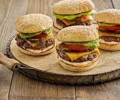

Sink your teeth into a delicious restaurant-style, hamburger recipe made from lean beef.Skip the prepackaged patties and take the extra time to craft up your own, and that little extra effort will be worth it.To make cheeseburgers, about 1 minute before burgers are done,top with sliced cheese; continue cooking until cheese begins to melt.
By Linda Lau Anusasananan
This Story Originally Appeared On sunset.com
 In a bowl, mix ground beef, egg, onion, bread crumbs, Worcestershire,garlic,
1/2 teaspoon salt, and 1/4 teaspoon pepper until well blended. Divide mixture
into four equal portions and shape each into a patty about 4 inches wide.
Lay burgers on an oiled barbecue grill over a solid bed of hot coals or high heat
on a gas grill (you can hold your hand at grill level only 2 to 3 seconds); close lid
on gas grill. Cook burgers, turning once, until browned on both sides and no
longer pink inside (cut to test), 7 to 8 minutes total. Remove from grill.
Lay buns, cut side down, on grill and cook until lightly toasted, 30 seconds to 1 minute.
Spread mayonnaise and ketchup on bun bottoms. Add lettuce, tomato, burger, onion, and salt and pepper to taste. Set bun tops in place.
If you want absolute bacteria safety, you need to cook your burgers to 160°. This recipe will keep them moist.
Per Serving: 480 calories; calories from fat 43%; protein 31g; fat 23g; saturated fat
5.6g; carbohydrates 37g; fiber 2.4g; sodium 978mg; cholesterol 127mg.